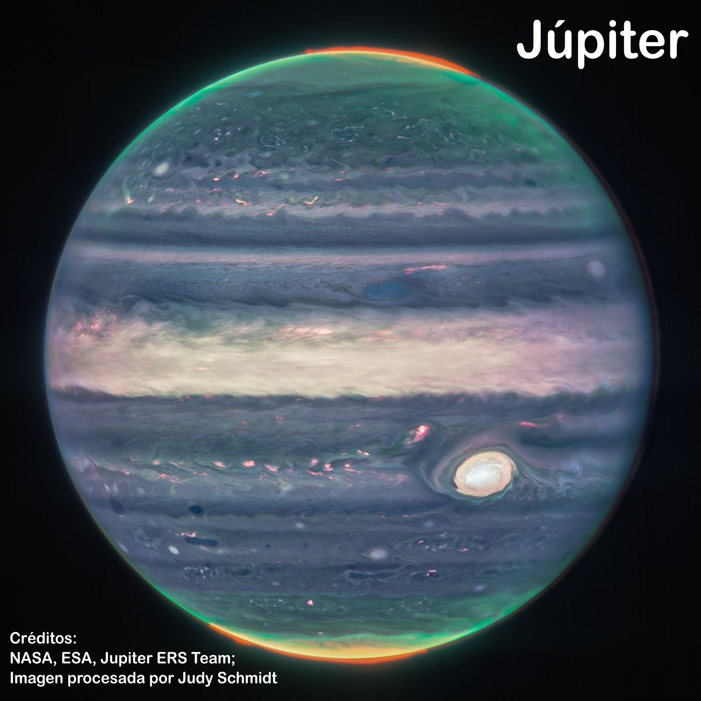
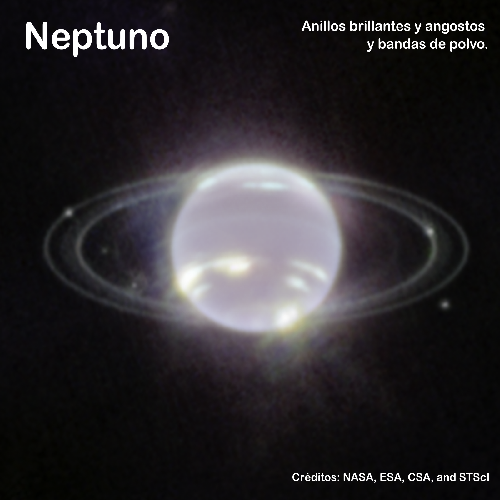
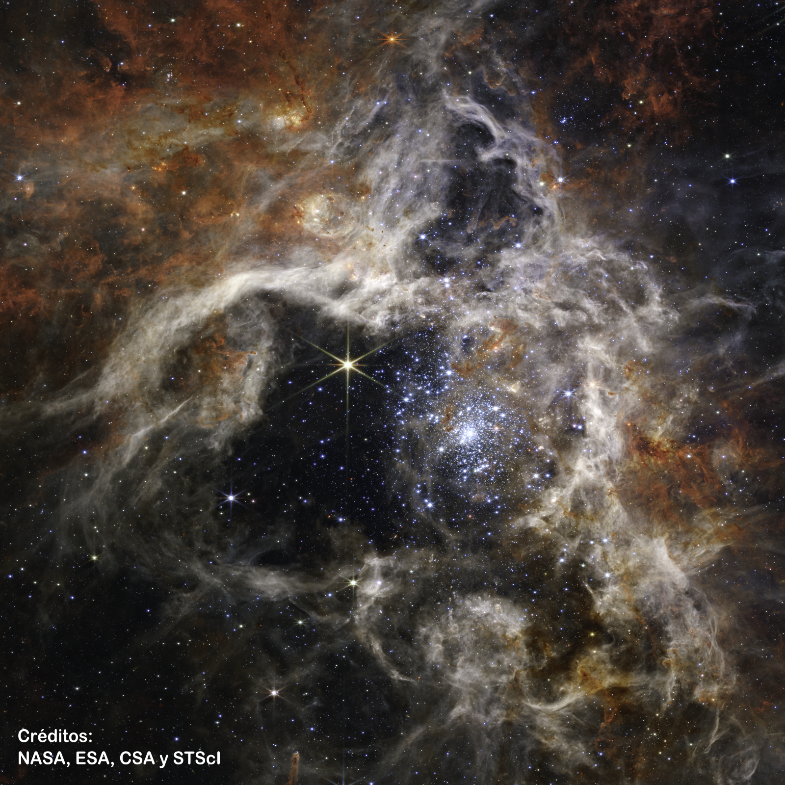
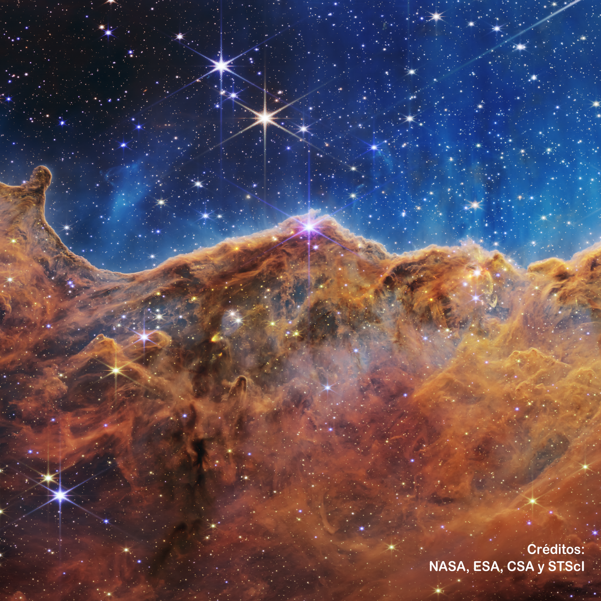

Resuelve los siguientes rompecabezas y descubre algunas de las asombrosas imágenes obtenidas mediante el Telescopio Espacial James Webb (JWST) a partir de su puesta en funcionamiento en el año 2022.




 Telescopio J. Webb
Telescopio J. Webb